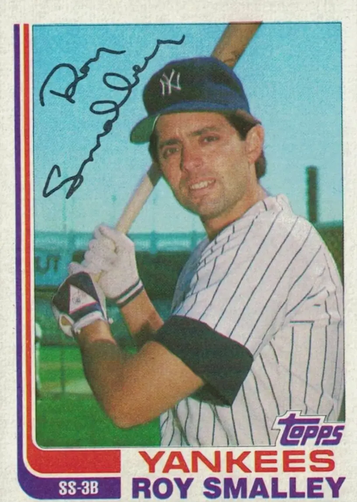

Roy Smalley III
Career Highlights & Facts
(Facts are AI-generated and may require verification)
- Father was a major league shortstop for 11 seasons.
- Uncle was major league player and manager Gene Mauch.
- Was an American League All-Star in 1979.
Would you like to find out more about Roy Smalley III?
Career Totals
| WAR | AB | H | HR | BA | R | RBI | SB | OBP | SLG | OPS | OPS+ |
|---|---|---|---|---|---|---|---|---|---|---|---|
| 27.9 | 5657 | 1454 | 163 | .257 | 745 | 694 | 27 | .345 | .395 | .740 | 103 |
Statistics via Baseball-Reference.com
The Original Clue